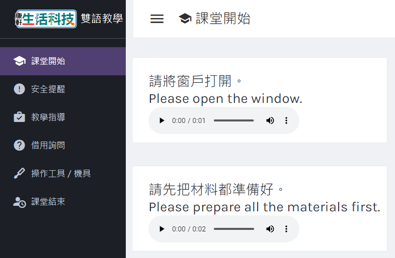

《ATtiny85說明》
ATtiny85的開發板官網關閉，請至新網址下載「開發板擴充套件」，詳細說明請下載電子檔→
ATtiny85開發板擴充套件網址更新《快速連結》
教學檔案下載
影片資源清單
雙語教學資源
《六冊補充資源彙整》
活動教案、步驟說明書
學習單
材料包目錄

《ATtiny85說明》
《快速連結》
《六冊補充資源彙整》
◤電子書、PPT
[連結] 康軒數位高手
◤全冊打包下載
[下載] 全書教學檔案
◤各章檔案
【緒論 展望科技】
[下載] SDG9產業創新與基礎設施_學習單（學生版） [下載] SDG9產業創新與基礎設施_學習單（教師版）
【第1章 畢業紀念品】[下載] 畢業紀念品_活動步驟說明書 [下載] 畢業紀念品_教案
【第2章 互動幻彩燈】[下載] 互動幻彩燈_活動步驟說明書 [下載] 互動幻彩燈_教案 [下載] 互動幻彩燈_外盒雷切檔 [下載] 互動幻彩燈程式_Start [下載] 互動幻彩燈程式_Example1 [下載] 互動幻彩燈程式_BrainAns1-1 [下載] 互動幻彩燈程式_BrainAns1-2 [下載] 互動幻彩燈程式_Example2 [下載] 互動幻彩燈程式_BrainAns2 [下載] 互動幻彩燈程式_Example3 [下載] 互動幻彩燈程式_Example4 [下載] 互動幻彩燈程式_Example5 [下載] 互動幻彩燈程式_BrainAns5 [下載] 互動幻彩燈程式_Example6
【活動PLUS 視訊補光燈】[下載] 視訊補光燈_活動步驟說明書
【活動PLUS 溫度警報器】[下載] 溫度警報器_活動步驟說明書 [下載] 溫度警報器_教案 [下載] 溫度警報器程式
【緒論 展望科技】
【P.116】 奈米是什麼 (4:34)
【P.116】 膠帶撕出石墨烯 (7:21)
【P.117】 極紫外線微影技術 (5:30)
【P.118】 費曼的微小世界說 (1:02)
【P.119】 蒸汽機的發明 (2:28)
【P.119】 電晶體是如何運作的 (4:53)
【P.120】 超級電腦︰臺灣杉二號 (4:32)
【P.120】 超級電腦︰Frontier (4:15)
【P.122】 韌性城市 (3:14)
【P.122】 機器人跳舞 (2:54)
【P.122】 微軟混合實境裝置 (2:27)
【P.122】 自己器官自己印 (3:20)
【P.122】 未來農業長什麼樣子呢？(3:25)
【P.122】 合成生物學 (2:55)
【P.123】 原來塑膠袋起初是一項環保的工具 (2:08)
【P.123】 AI將取代人類？ (8:46)
【P.124】 量子電腦完成極速運算 (2:07)
【P.124】 3分鐘讓你知道電磁波 (2:53)
【P.124】 基因編輯治百病？ (3:22)
【P.125】 新聞︰塑膠微粒危害 (2:34)
【P.125】 新聞︰美國3D列印槍 (1:42)
【P.125】 新聞︰中國的人臉識別監控系統有多厲害 (5:22)
【P.125】 我們與駭客的距離 (4:31)
【P.126】 自駕小巴Winbus (3:50)
【P.126】 四輪革命進行中（上）(4:18)
【P.126】 四輪革命進行中（下）(3:57)【第 1 章 畢業紀念品】
活動示範影片
●活動示範影片
●生科實作Follow Me︰畢業紀念品
1-1 模組化的產品設計
【P.150】 數位教具：PWM技術原理
1-2 紀念品設計
【P.155】 壓克力薄板鑽孔示範 (1:33)
1-4 機具材料
●機具材料影片
科技廣角
【P.172】 2020東京奧運無人機表演 (1:00)
【P.172】 新聞︰無人機送貨 (2:04)
【P.172】 新聞︰無人機突然墜落 (1:45)
【P.172】 無人機駕駛員 (2:27)【第 2 章 互動幻彩燈】
活動示範影片
●活動示範影片
●生科實作Follow Me︰互動幻彩燈
2-1嵌入式系統
【P.186】 神奇的陀螺儀實驗 (2:07)
【P.186】 新聞：不倒的兩輪機車_陀螺儀應用 (1:23)
【P.189】 風扇如何運作 (7:59)
【P.194】 手創自己的世代 (5:27)
【P.195】 TED演講：空氣盒子_陳伶志博士 (13:09)2-4 機具材料
●機具材料影片
【邁向高中 生活科技】
高中課程簡介
【P.236】 機械群 (1:00)
【P.236】 動力機械群 (1:00)
【P.236】 電機與電子群 (1:00)
【P.236】 化工群 (1:00)
【P.236】 土木與建築群 (1:00)
【課室英語教學網】
[連結] 課室英語教學網
【雙語教學投影片】
[連結] 課室雙語、課程內容雙語PPT